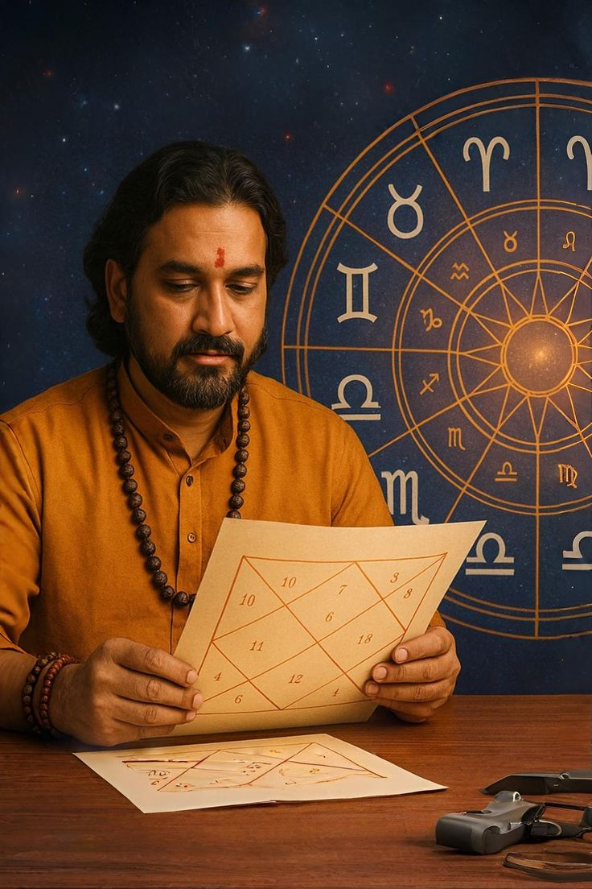

About Us


We combine ancient numerology principles with modern, actionable guidance to help you unlock your Money Switch Code and align daily actions with your financial destiny.
- Personalized assessments based on your name and date of birth
- Clear, simple rituals you can start in minutes
- Beautiful, easy-to-read reports designed for results
10K+
Reports Generated
4.9★
Client Rating
24/7
Support